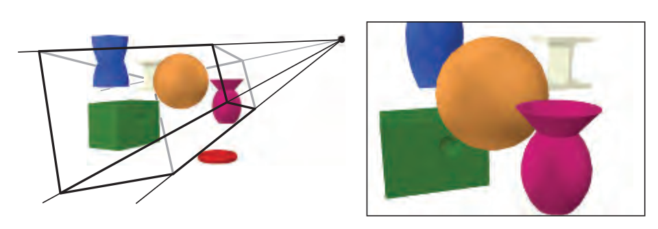

概述 (Introduction)

图形渲染管线是实时渲染的核心组件。渲染管线的功能是通过给定虚拟相机、3D场景物体以及光源等场景要素来产生或者渲染一副2D的图像。如上图所示，场景中的3D物体通过管线转变为屏幕上的2D图像。渲染管线是实时渲染的重要工具，实时渲染离不开渲染管线。图形渲染管线主要包括两个功能：一是将物体3D坐标转变为屏幕空间2D坐标，二是为屏幕每个像素点进行着色。渲染管线的一般流程如下图所示。分别是：顶点数据的输入、顶点着色器、曲面细分过程、几何着色器、图元组装、裁剪剔除、光栅化、片段着色器以及混合测试。我们会在后文对管线的各个阶段进行详细的介绍。
渲染管线的一个特点就是每个阶段都会把前一个阶段的输出作为该阶段的输入。例如，片段着色器会将光栅化后的片段(以及片段的数据块)作为输入进行光照计算。除了图元组装和光栅化几个阶段是由硬件自动完成之外，管线的其他阶段管线都是可编程/可配置的。其中顶点着色器、曲面细分相关着色器、几何着色器和片段着色器是可编程的阶段，而混合测试是可高度配置的阶段。管线的可编程/可配置是渲染管理的另一个特点。因为早期的渲染管线采用的是立即渲染模式(Immediate mode，也就是固定渲染管线)，不允许开发人员改变GPU渲染的方式，而核心渲染默认(Core-profile mode)允许开发人员定制化GPU的渲染方式。

我们接下来简单介绍管线各个阶段的功能：
顶点数据：顶点数据用来为后面的顶点着色器等阶段提供处理的数据。是渲染管线的数据主要来源。送入到渲染管线的数据包括顶点坐标、纹理坐标、顶点法线和顶点颜色等顶点属性。为了让OpenGL明白顶点数据构成的是什么图元，我们需要在绘制指令中传递相对应的图元信息。常见的图元包括：点(GL_POINTS)、线(GL_LINES)、线条(GL_LINE_STRIP)、三角面(GL_TRIANGLES)。
顶点着色器：顶点着色器主要功能是进行坐标变换。将输入的局部坐标变换到世界坐标、观察坐标和裁剪坐标。虽然我们也会在顶点着色器进行光照计算(称作高洛德着色)，然后经过光栅化插值得到各个片段的颜色，但由于这种方法得到的光照比较不自然，所以一般在片段着色器进行光照计算。关于坐标变换以及着色方案的细节，我们会在后面详细介绍。
曲面细分：曲面细分是利用镶嵌化处理技术对三角面进行细分，以此来增加物体表面的三角面的数量，是渲染管线一个可选的阶段。它由外壳着色器(Hull Shader)、镶嵌器(Tessellator)和域着色器(Domain Shader)构成，其中外壳着色器和域着色器是可编程的，而镶嵌器是有硬件管理的。我们可以借助曲面细分的技术实现细节层次(Level-of-Detail)的机制，使得离摄像机越近的物体具有更加丰富的细节，而远离摄像机的物体具有较少的细节。

几何着色器：几何着色器也是渲染管线一个可选的阶段。我们知道，顶点着色器的输入是单个顶点(以及属性)， 输出的是经过变换后的顶点。与顶点着色器不同，几何着色器的输入是完整的图元(比如，点)，输出可以是一个或多个其他的图元(比如，三角面)，或者不输出任何的图元。几何着色器的拿手好戏就是将输入的点或线扩展成多边形。下图展示了几何着色器如何将点扩展成多边形。

图元组装：图元组装将输入的顶点组装成指定的图元。图元组装阶段会进行裁剪和背面剔除相关的优化，以减少进入光栅化的图元的数量，加速渲染过程。在光栅化之前，还会进行屏幕映射的操作：透视除法和视口变换。
关于透视除法和视口变换到底属于流水线的那个阶段并没有一个权威的说法，某些资料将这两个操作归入到图元组装阶段，某些资料将它归入到光栅化过程，但对我们理解整个渲染管线并没有太大的影响，我们只需要知道在光栅化前需要进行屏幕映射就可以了，所以我们这里将屏幕映射放到了图元组装过程。这两个操作主要是硬件实现，不同厂商会有不同的设计。
光栅化：经过图元组装以及屏幕映射阶段后，我们将物体坐标变换到了窗口坐标。光栅化是个离散化的过程，将3D连续的物体转化为离散屏幕像素点的过程。包括三角形组装和三角形遍历两个阶段。光栅化会确定图元所覆盖的片段，利用顶点属性插值得到片段的属性信息，然后送到片段着色器进行颜色计算，我们这里需要注意到片段是像素的候选者，只有通过后续的测试，片段才会成为最终显示的像素点。

片段着色器：片段着色器在DirectX中也成为像素着色器(Pixel Shader)。片段着色器用来决定屏幕上像素的最终颜色。在这个阶段会进行光照计算以及阴影处理，是渲染管线高级效果产生的地方。
测试混合阶段：管线的最后一个阶段是测试混合阶段。测试包括裁切测试、Alpha测试、模板测试和深度测试。没有经过测试的片段会被丢弃，不需要进行混合阶段；经过测试的片段会进入混合阶段。Alpha混合可以根据片段的alpha值进行混合，用来产生半透明的效果。Alpha表示的是物体的不透明度，因此alpha=1表示完全不透明，alpha=0表示完全透明。测试混合阶段虽然不是可编程阶段，但是我们可以通过OpenGL或DirectX提供的接口进行配置，定制混合和测试的方式。

值得注意的是，半透明物体的绘制需要遵循画家算法(painter Algorithm)由远及近进行绘制，因为半透明的混合跟物体的顺序有严格的对应关系。从下面两张图我们可以看到，先绘制红色还是先绘制绿色对最终颜色的有这很大的影响。所以，绘制半透明物体之前，我们需要按照距离远近对场景中的物体进行严格排序，然而这是一个非常棘手的问题。比如，我们如何排序下面几个三角形呢？所以当进行半透明物体渲染时，一般会使用顺序无关的半透明渲染技术(Order-independent transparency，OIT)。


渲染管线并非严格这样划分，不同的教材会有不同的划分方法。《Real Time Rendering》一书将渲染管线划分为以下四个阶段：应用程序阶段(Application)、几何处理阶段(Geometry Processing)、光栅化(Rasterization)和像素处理阶段(Pixel Processing)。应用阶段通常是在CPU端进行处理，包括碰撞检测、动画物理模拟以及视椎体剔除等任务，这个阶段会将数据送到渲染管线中；几何处理阶段主要执行顶点着色器、投影变换、裁剪和屏幕映射的功能；光栅化阶段和我们上面讨论的差不多，都是将图元离散化片段的过程；像素处理阶段包括像素着色和混合的功能。我们可以发现，虽然管线的划分粒度不一样，但是每个阶段的具体功能其实是差不多的，原理也是一样的，并没有太大的差异。

顶点数据（Vertex Data)
顶点数据在DirectX中成为输入装配阶段(Input Assembler State)。是渲染管线数据的主要来源，输入的数据可以包括顶点坐标、顶点颜色、顶点法线、纹理坐标等数据，利用这些输入数据我们可以在片段着色器计算片段的光照信息，最终输出到颜色缓冲器。顶点数据在流水线中以图元的方式进行处理，常见的图元有：点、线和三角面。在OpenGl中可以使用glGenVertexArrays()、glGenBuffers()、glBindBuffer()、glBindVertexArray()、glVertexAttribPointer()等API从应用程序传入数据，并设置顶点对应的属性信息和内存布局。四边形的顶点数据如下所示，包括了顶点坐标、顶点颜色和顶点的纹理坐标。这里我们是手动设置了四边形四个顶点的属性值，试想一下，对于一个具有几万个三角面的复杂模型，我们如何设置这些属性值呢？此时我们就需要使用到建模工具了，常见的3D建模工具有：Maya、Blender、3Ds Max等。 我们可以在程序中加载建模工具产生的这些数据，提高开发效率。


我们用三角形网格来近似表示物体，用指定的3个顶点来定义三角形。由于相邻三角形会存在顶点共用的情况，尤其在物体网格非常复杂的情况下，冗余数据会非常多。我们可以通过使用索引来避免共享顶点间数据的多余，也就是使用顶点缓存对象(Vertex Buffer Object，VBO)。
顶点着色器(Vertex Shader)
坐标变换 (Coordinate Transform)
顶点着色器用来处理输入的顶点数据，主要用来进行顶点坐标变换以及顶点着色。我们知道，从输入的顶点局部坐标到最终的屏幕坐标需要经过一系列的坐标变换，才能最终显示到屏幕上。下面的图片展示了顶点坐标的一系列变换过程。我们从建模工具得到的是物体的局部坐标(Local Coordinate)，局部坐标通过模型矩阵Model变换到世界坐标(World Coordinate)，世界坐标通过观察矩阵View变换到观察坐标(View Coordinate)，观察坐标经过投影矩阵Projection变换到裁剪坐标(Clip Coordinate)，裁剪坐标经过透射除法(Perspective Division)得到标准设备空间(Normalized Device Coordinates，NDC)，NDC坐标通过视口变换(Viewport Transformation)变换到窗口坐标进行显示。看到这么多变换，是不是一下子有点懵了！我们接下来看下每个变换都做了什么。

我们知道，光照计算一般都是在世界空间进行的，所以输入的顶点坐标需要通过乘以模型矩阵变换到世界空间。如果物体变换有非均匀缩放，那么在变换法线时就要注意了。我们不能简单的通过乘以模型矩阵来将法线变换到世界空间。下图展示了法线变换可能产生的问题。如果只是存在平移变换(Translation)我们无需对法线进行变换；如果只存在平移和旋转变换(Rotation)我们只需要乘上渲染矩阵；如果存在非均匀缩放变换(Scaling)我们需要使用矩阵的逆的转置来变换法线。关于该过程的推导可以参考OpenGL Normal Vector Transformation这篇文章。

虚拟摄像机定义了我们的观察空间。世界空间和观察空间的关系如下所示，虚拟摄像机的位置是坐标的原点，观察方向沿着Z轴的负方向。我们可以通过摄像机的位置EyePosition、观察目标点FocusPosition和向上的方向向量UpDirection来构建观察矩阵。OpenGL和DIrectX都有对应的API。该方法的实现比较简单，只需要通过两次向量的叉乘就可以构建该矩阵。

介绍裁剪空间之前，我们需要先来看一个重要的概念：视椎体(Frustum)。视椎体可以通过上下左右远近六个平面来定义。我们通过投影矩阵将物体从观察空间变换到裁剪空间，裁剪空间是一个以原点为中心的立方体，不在该裁剪空间的图元都会被裁剪。根据投影方式的不一样，我们可以定义不同的投影矩阵，常见的投影方法有：正交投影和透视投影。两种不同投影对应的视椎体如下图所示。我们可以看到正交投影的视椎体是长方体，而透视投影的视椎体是台体。我们可以通过近平面(Near)、远平面(Far)、垂直视场角(Vertical Field of View， FOV)和屏幕纵横比(Aspect Ratio，也叫作屏幕宽高比)四个参数来定义视椎体。

正交投影
正交投影又叫平行投影。投影视椎体是一个长方体，物体在投影平面的大小与距离远近没有关系。在OpenGL中我们可以通过glm:ortho()这个函数来创建一个正交投影矩阵。正交投影其实是使用如下所以的GL_PROJECTION矩阵进行变换。其中，变量r、l、t、b、n和f是视椎体的上下左右远近平面的边界变量。通过正交矩阵变换后，我们得到了裁剪空间。建筑蓝图绘制和计算机辅助设计需要使用到正交投影，因为这些行业要求投影后的物体尺寸及相互间的角度不变，以便施工或制造时物体比例大小正确。正交投影的示意图如上图右图所示。

透视投影
根据我们的生活经验我们会发现这样的现象，离你越远的物体看起来越小，随着距离的增大，最终会消失在视野中，成为灭点。为了实现这种近大远小的效果，我们需要引入透视投影。在OpenGL中我们可以通过glm:perspective()这个函数来创建一个透视投影矩阵。投影变换使用的是齐次坐标，因为在透视除法阶段需要将XYZ的值除以W分量来获取NDC坐标空间。透视除法可以实现近大远小的视觉效果，该过程由硬件自动执行。这也是正交变换和透视变换最主要的区别，我们在后面会进行具体讨论。下图所示的矩阵是透视投影矩阵，和正交投影一样都是用来进行坐标空间变换的。透视投影示意图如上图左图所示。


如果你对这些矩阵的推导感兴趣，或者对顶点着色器的坐标变换以及透视除法的原理不是很清楚，推荐大家看下我之前翻译的这篇文章：OpenGL投影矩阵。
由于我们在坐标变换过程中涉及到了很多矩阵：Model、View、Projection。我们可以通过矩阵的乘法将它们联系起来，得到从局部空间到裁剪空间的坐标变换矩阵，这里需要注意矩阵的运算顺序是从右到左。


平面着色 (Flat Shading)
根据光照计算的不同，可以将着色方式分为平面着色、高洛德着色和冯氏着色。其中，最简单的着色方式就是平面着色。平面着色是使用一个顶点颜色来代表整个三角面的颜色，默认是使用索引中第一个顶点的颜色，例如，第一个顶点是红色，那么整个三角面都是红色的。上图最左边的图像就是利用平面着色渲染得到的，我们可以看到平面着色几乎无法展示高光效果。
高洛德着色 (Gouraud Shading)
高洛德着色就是在顶点着色器中计算顶点的光照信息，所以也叫作逐顶点着色。高洛德着色是平面着色和冯氏着色的折中方案，该方法会在顶点着色器中计算三个顶点的光照信息，然后在光栅化阶段插值得到三角形内部各个片段的光照信息。上图中间的图像就是利用高洛德着色渲染得到的，我们可以看到在高光部分高洛德着色表现的并不是很令人满意，原因在于高光并非是线性变换的，所以通过插值得到的效果比较差。
冯氏着色 (Phong Shading)
冯氏着色就是在片段着色器中计算每个片段的光照信息，所以也叫作逐片段着色。冯氏着色是三种着色方式中效果最好的，也是性能消耗最大的着色方式。冯氏着色会在根据输入的顶点法线信息在光栅化阶段插值得到各个片段的法线信息，然后在片段着色器中利用法线、纹理坐标、位置等信息计算每个片段的光照信息。开销最大，同时效果也是最好的，我们可以从上图右边的图像看到冯氏着色渲染得到的，通过对比高洛德着色和冯氏着色的高光部分，我们看发现冯氏着色处理得更加自然真实。
从上面的讨论我们发现：这三种着色方案中平面着色效果最差(计算量最少)，高洛德着色其次(计算量其次)，冯氏着色最好(计算量最多)。我们需要根据实际的需求选择对应的着色方式，需要在画面效果和性能开销之间进行取舍。
曲面细分着色器(Tessellation Shader)
曲面细分是利用镶嵌化处理技术对三角面进行细分，以此来增加物体表面的三角面的数量，是渲染管线一个可选的阶段。它由外壳着色器(Hull Shader)、镶嵌器(Tessellator)和域着色器(Domain Shader)构成。我们不创建高模(high-poly)来丰富网格信息主要是考虑到以下几个原因：第一，基于GPU可以实现动态的LOD技术，可以根据物体距离摄像机的远近来调整多边形网格的细节，比如说，若物体距离摄像机比较远，则按照高模的规格对它进行渲染会造成浪费，因为我们根本看不清网格的所有具体细节。随着物体和摄像机之间距离的拉近，我们可以实现连续镶嵌化处理，增加物体的细节；第二，节省内存。我们可以在各种存储器中保存低模网格信息，再根据需求用GPU动态地增加物体表面的细节。

几何着色器(Geometry Shader)
几何着色器(Geometry Shader)属于渲染管线的一个可选阶段，位于曲面细分(Tessellation)和光栅化(Rasterization)之间。顶点着色器以顶点数据作为输入数据，而几何着色器则以完整的图元(Primitive)作为输入数据。例如，以三角形的三个顶点作为输入，然后输出对应的图元。与顶点着色器不能销毁或创建顶点不同，几何着色器的主要亮点就是可以创建或销毁几何图元，此功能让GPU可以实现一些有趣的效果。例如，根据输入图元类型扩展为一个或更多其他类型的图元，或者不输出任何图元。需要注意的是，几何着色器的输出图元不一定和输入图元相同。几何着色器的一个拿手好戏就是将一个点扩展为一个四边形(即两个三角形)。几何着色器通常用来实现一种叫做公告栏(BillBoards)的视觉效果，几何着色器的一些应用如下图所示。关于几何着色器的具体细节可以参考我之前写的一篇文章：几何着色器。

图元组装(Primitive Assembly)
裁剪 (Clipping)
只有当图元部分或全部位于视椎体内时，我们才会将它送到流水线的下个阶段，也就是光栅化阶段。而完全位于视椎体外部的图元会被裁剪掉，不会对它们进行渲染。对于部分位于视椎体的图元，我们需要对他们进行所谓的剪裁操作，例如，线段的两个顶点一个位于视椎体内而另一个位于视椎体外，那么位于外部的顶点将被裁剪掉，而且在视椎体与线段的交界处产生新的顶点。通过之前顶点着色器的投影变换后，视椎体是一个立方体，这有利于我们进行裁剪操作，使得该操作变得更加容易和一致。

从上图中我们可以看到红色的三角形被丢弃了，而绿色的三角形被送到了光栅化阶段，需要特别留意的是黄色三角形被部分裁剪了，位于视椎体外的顶点被裁剪了，并且在交界处产生了两个新的顶点代替原来的旧顶点。裁剪阶段使用的是4-分量的齐次坐标，通过执行透射除法我们可以得到归一化设备坐标(Normalized Device Coordinates，NDC)，然后通过视口变换将NDC坐标变换到屏幕坐标，我们会在下面的屏幕映射具体讨论这两个部分。我们注意到透射除法在裁剪操作之后进行，可以保证透射除法中 w != 0。常见的裁剪算法有Cohen-Sutherland算法、Liang-Barsky算法和Sutherland-Hodgman多边形裁剪算法。
这里我们顺便说下帧缓存中的裁剪，也就是说我们可以将裁剪操作推迟到屏幕坐标中进行，使用一种叫做裁切(Scissoring)的技术在帧缓存中执行裁剪操作。不过，对于几何实体一般在帧缓存之前进行裁剪更好一些，帧缓存中的裁剪一般只适合于光栅对象，比如像素块。
背面剔除 (Back-Face Culling)

背面剔除指的是剔除那些背对摄像机的图元，如下图所以，图元t1背向摄像机，需要被剔除，而图元t2需要被保留。我们利用三角形顶点的环绕顺序(Winding Order)来确定所谓的正面(front-face)和背面(back-face)。通常情况下，三角形的3个顶点是逆时针顺序(couter-clockwise，ccw)进行排列时，我们会认为是正面，而顺时针(clockwise，cw)排序时，我们会认为是背面。例如t2的三个顶点顺序为逆时针的(v1，v2，v3)，所以是正面，需要保留。将t1和t2投影到XY平面后，我们可以清楚的看到它们顶点的环绕顺序。


从上图可以看到，这里我们可以使用行列式(determinant)来确定投影后的2D三角形到底是CW还是CCW顺序。行列式的第一行由顶点v1和v2坐标确定，而第二行由顶点v1和v3坐标确定。如果行列式的值为负数，那么该三角面是背面朝向；如果为正数，则是正面朝向。
背面剔除的技术默认是不开启的。我们可以通过glEnable(GL_CULL_FACE)函数来开启背面剔除的优化。开启后，我们还可以通过glCullFace()函数来配置剔除的是正面还是背面。参数为GL_FRONT、GL_BACK(默认值)和GL_FRONT_AND_BACK。虽然背面剔除可以大概减少50%的渲染图元，但是在渲染半透明或不透明物体时，不能使用该技术，否则会出现穿帮的情况，因为半透明或不透明物体可以看到物体背后的东西。
屏幕映射 (Screen Mapping)
- 透视除法 (Perspective Division)

上面的流程图展示了顶点数据的变换过程。从前面讨论的顶点变换我们知道：经过模型矩阵Model、观察矩阵View和投影矩阵Projection变换后，局部空间被变换到了裁剪空间(-Wc <= XYZ <= Wc)。执行透射除法后(除以w分量)，我们可以得到标准设备空间，该空间一般也称作标准视体(Canonical View Volume，CVV)。执行透视除法是为了实现透射投影中近大远小的视觉效果，经过了投影矩阵Projection的变换后，W分量保留了观察空间中物体Z坐标的信息，所以透视除法才能够根据距离摄像机的远近正确实现透视效果。我们注意到透射除法是由硬件自动执行的，也就是说透视除法在正交投影和透视投影中都会被执行，只不过正交投影变换并没有改变W分量的值(W分量的值仍是1)，所以透视除法并没有实际的效果。我们从这里也明白了使用齐次坐标的意义，其实就是为了正确记录下投影变换前(观察空间)中物体的深度信息，也就是Z坐标的值。
如果对坐标变换、投影变换、齐次坐标以及透视除法不是很清楚的话，可以参考我之前翻译的这两篇文章：OpenGL变换和OpenGL投影矩阵。


- 视口变换 (Viewport Transform)

通过透视除法后，我们得到了NDC坐标，获得NDC坐标是为了实现屏幕坐标的转换与硬件无关。经过视口变换后，我们可以得到窗口坐标(Window Coordinates)。除了窗口坐标，还有屏幕坐标(Screen Coordinates)。一般来说，屏幕坐标是2D的概念，只用于表示屏幕XY坐标，而窗口坐标是2.5D的概念，它还带有深度信息，也就是经过变换后的Z轴的信息。我们可以用glViewport()进行视口变换。Z坐标的数值在OpenGl和DirectX中略有不同，Z坐标在OpenGL中会被映射到[-1，1]，在DirectX中会被映射到[0，1]，我们使用glDepthRange()来进行深度映射。NDC坐标映射到窗口坐标需要经过平移和缩放两个变换，视口变换矩阵如下所示，其中width、height、farVal和nearVal分别表示视口的宽高远近。关于视口矩阵的推导可以参考YouTube的这个视频。
从上面视口变换的示意图我们注意到屏幕空间和Viewport其实是不一样的。我们可以通过glViewport()来设定视口的坐标和宽高。如果视口小于屏幕空间，那么会造成多余的像素被渲染。例如，glClear()会为整个屏幕空间设定指定颜色值。我们可以通过裁切测试 (Scissor Test)来指定渲染的区域，避免上面出现的渲染浪费的问题。我们会在后面的内容具体讨论裁切测试这种技术。

- 扩展：拾取 (Picking)
与投影变换和视口变换相反的一种变换是：拾取(Picking)。也就是根据屏幕坐标反算出对应的3D对象。我们需要做逆于投影视口变换的操作，将屏幕坐标变换到3D坐标。拾取变换的过程如下所示：
- 通过视口变换矩阵逆矩阵将屏幕坐标变换到NDC坐标
- 然后通过乘以W分量(投射除法的逆变换)将NDC坐标变换到裁剪坐标
- 通过投影矩阵逆矩阵将裁剪坐标变换到观察坐标
- 求出经过原点O以及点的拾取射线
- 拾取射线位于观察空间，通过将拾取射线变换到局部空间进行相交行检测 (这里将拾取变换到局部空间是为了减少运算量，将物体的每个图元变换到世界坐标效率较低)
光栅化(Rasterization)

光栅化也称为扫描转换(scan conversion)，该阶段主要是将变换到屏幕空间的图元离散化为片元的过程。离散化过程是利用三角图元所覆盖的片段来表示该图元。这里有个概念需要我们注意，就是如何定义图元覆盖(Overlap)一个片段。如果我们采用最简单的点采样(Point Sampling)而且采样点位于片段的中央位置。当采样点位于图元的内部时，我们认为图元覆盖了该片段。这是最简单的采样方式，除此还有超级采样和多重采样技术，我们会在抗锯齿的部分展开介绍。光栅化主要包括两个过程：三角形的组装和三角形的遍历。

三角形组装 (Triangle Setup)
三角形组装会对顶点的输入数据(比如，颜色、法线、纹理坐标)进行插值，得到各个片段对应的数据值，为后面的片段着色提供片段数据。下图所示就是根据顶点输入的颜色值和法线进行插值得到的各个片段的颜色和法线，用于后续的计算。这里对法线的插值进行了可视化处理。不过我们这里只是进行一个简单的示范，一般情况下，我们很少去插值颜色值，通常都是利用片段着色器对片段进行着色。


三角形遍历 (Triangle Traversal)
其实三角形遍历的操作我们在前面基本都说过了，通过屏幕空间的坐标组装三角形后，我们遍历这些三角图元覆盖了哪些片段的采样点，随后得到该图元所对应的片元。接下来我们通过顶点的输入数据插值获取片段的数据属性，包括颜色、法线、纹理坐标、深度等信息。对于透射投影，我们需要用到透射校正插值(Perspetive-Correct-Interpolation)来正确插值片段的颜色、纹理等信息。关于透射校正插值的方法可以参考这篇论文。

线段扫描转换
这部分我们讨论在屏幕绘制线段的方法。线段是最简单的图元，是绘制其他复杂图元的基础。我们从最简单的数字微分画线算法DDA开始讨论扫描转换的方法。然后介绍更加高效绘制线段的Bresenham光栅化算法。讨论完线段的绘制方法后，我们简单介绍多边形填充算法。这里主要介绍最简单最常见的扫描线填充算法！
- 数字微分画线算法DDA (Digital Differential Analyzer)

假定一条线段的两个端点分别是(x1，y1)和(x2，y2)，斜率m满足：0<=m <= 1。其实这里假定斜率m只是为了方便讨论，我们会在Bresenham算法中讨论如何对一般情况下的m进行处理。当x从x1变化到x2时，y从y1变化到y2。也就是说XY满足如下的增量关系：

假定x的增量为1，那么y的增量为m。虽然增量为整数，但是由于斜率m为浮点数，所以导致y的值不是整数，为了找到合适的像素位置，我们需要对y的值进行取整操作。DDA算法的伪代码如下：

我们把斜率最大限制为1的原因可以从下面左边的图看到。DDA算法的基本思想是对于每个x值，算出一个最佳位置的y值。对于斜率大于1的线段，由于两个像素点之间的间隔过大，生成近似的线段产生了较大的误差。对于斜率大于1的线段，我们可以通过交换x和y，即该算法变为：对于每个y值，计算一个最佳的x值，我们可以从下面右边的图看到对应的结果。

- Bresenham光栅化算法
DDA算法虽然很简单，编码也非常容易实现，但是由于每生成一个像素都需要一次浮点数的加法运算，效率较低。我们接下来介绍的Bresenham算法可以避免浮点数的运算，只需要通过整数的加法、减法和移位操作，效率很高，所以它已经成为 硬件和软件光栅处理器的标准算法。Bresenhan算法与DDA算法的主要区别在于构造了一个新的判定变量d来避免浮点数的运算，即：

如何对Bresenham算法不是很熟悉的话，可以参考我的这篇文章Bresenham光栅化算法来认识Bresenham算法是如何利用判定变量d来进行迭代处理每个像素的。
多边形填充算法
介绍完线段扫描算法后，我们接下来看多边形的填充算法，相关的算法有很多，比如：奇偶填充、种子填充和扫描线填充算法。我们这里介绍使用最多最常见的扫描线填充算法。
- 扫描线填充算法(Scanline Filling)
扫描线算法根据扫描线与多边形的交点来对多边形进行颜色填充。需要注意的是，当多边形的顶点与扫描线相交时，需要对交点进行取舍来保证正确的配对。我们可以通过检查与顶点相邻边的端点Y值来确定顶点的取舍，如下图(c)所示，扫描线 y = e 与三角形的顶点P1相交。我们发现P1相邻边顶点P0和P2的Y值都大于P1的Y值，所以需要舍弃当前相交的顶点，保证顶点能够进行正确的两两配对！


在扫描线算法中，我们发现扫描线其实只与某些边存在交点，所以我们其实无需对每条边都进行求交的计算。通过使用活性边表(Active Edge Table，AET)这种数据结构可以对该算法进行优化。对于下面的多边形相交测试，我们可以使用该AET链表进行表示，其中每条边Edge的数据结构定义如下：


片段着色器(Fragment Shader)

Phong光照模型
计算光照最常用的模型就是大名鼎鼎的phong模型了，该模型其实是经验模型，参数信息都是经验得到的，并没有实际的物理意义，所以利用Phong模型会出现违背物理规则的时候。Phong模型将物体光照分为三个部分进行计算，分别是：漫反射分量、镜面高光和环境光。其中，环境光分量是用来模拟全局光照效果的，其实就是在物体光照信息基础上叠加上一个较小的光照常量，用来表示场景中其他物体反射的间接光照。

漫反射表示的是光线进入物体内部后重新散射出来的那部分光线，简单起见我们会认为重新散射出来的光线是均匀分布的，如上图所示。因此，无论观察者从哪个方向进行观察，漫反射效果其实是一样的，所以我们认为漫反射和观察位置是无关的。漫反射分量通常利用朗伯余弦定律(Lambert Consine Law)来计算，也就是说漫反射的大小取决于表面法线和光线的夹角。当夹角越大时，漫反射分量越小，当夹角接近90度时，我们认为漫反射几乎为零。

说到朗伯余弦定律，我们不得不说下半朗伯模型(Half Lambert)。该光照模型是有Valve公司在制作半条命游戏时发明的，由于改进物体较暗区域的光照信息。如下图所示，右边的图是使用半朗伯模型得到的效果。我们可以明显的看到人物被照亮了！半朗伯模型的代码只需要在原来的代码加上float hLambert = difLight * 0.5 + 0.5;一行代码就可以了，其实该代码就是将之前的漫反射系数从[0，1]变到[0.5,1]，所以提升了漫反射的亮度信息。


镜面反射表示光线照射到物体表面后被重新反射的现象，镜面反射遵循反射定律。我们生活中发现金属表面会有高光的现象，就是由于金属对光线有较高的反射率，给人一种金属感，通过镜面反射我们可以模拟金属和非金属物质对光照的反射程度。我们在日常生活中其实也可以发现，高光跟我们观察的方向是有关系的，我们在描述高光性质时需要知道观察者位置信息。


Blinn-Phong光照模型

下面我们介绍另一种光照模型：Blinn-Phong光照模型。Blinn-Phong模型是对我们上面讲到的Phong模型的改进，Phong模型在处理高光时会出现光照不连续的情况。我们知道高光跟观察位置密切相关，当观察方向和反射光线夹角大于90度时(如上图所示)，Phong模型会出现镜面反射分量被消除的情况，所以出现高光不连续的想象，如下图的第一种图所示。我们可以通过Blinn-Phong模型来对它进行改进，下面两张图对比了这两种模型在处理高光时的差异。

Blinn-Phong模型在处理镜面反射时不使用观察方向和反射光线的夹角来计算，而是引入了一个新的向量：半角向量(Halfway vector)。半角向量其实很简单，就是光线向量L和观察方向V的中间位置。Blinn-Phong模型计算的就是半角向量H和平面法线的夹角(当视线和反射向量对齐时，有最大的镜面反射)，这样无论观察者在那个方向进行观看，半角向量和法线夹角都不会超过90度，不会出现上面说的高光不连续的问题，光照效果更佳真实。

纹理贴图 (Textures)
纹理贴图也成为纹理映射，是将图像信息映射到三角形网格上的技术，以此来增加物体表面的细节，令物体更具有真实感。纹理技术有很多，最常见的是凹凸贴图(bump mapping)、法线贴图(normal mapping)、高度纹理(height mapping)、视差贴图(parallax mapping)、位移贴图(displacement mapping)、立方体贴图(cubemap)、阴影贴图(shadowmap)。凹凸贴图、法线贴图等技术都是利用光照信息的明暗对比来产生视觉错误。纹理贴图是片段着色器的主要操作，通过贴图技术可以实现很多高级的效果。我们将贴图上的每个像素成为纹素(texel，纹理像素texture pixel的意思，用于和像素进行区分)，纹理映射其实就是进行纹素和像素对应的过程。

我们一般使用一个二维的坐标(u，v)来表示纹理坐标，其中u是横坐标，v是纵坐标，因此纹理坐标一般也被称为UV坐标。UV坐标一般被归一化到[0,1]之间，但是如果UV超出这个范围，我们就需要指定纹理坐标的寻址方式，也叫作平铺方式。常见的寻址方式有：重复寻址(repeat)、边缘钳制寻址(clamp)和镜像寻址(mirror)。不同的寻址方式说明了UV超出[0，1]时如何访问纹理数据的。下图展示了Unity3d中纹理的重复寻址和钳制寻址方式。

除了寻址方式外，纹理的采样方式也会觉得最终的显示效果。由于纹素和像素通常不是一一对应的，所以我们需要决定像素所对应的纹素信息时，需要用到纹理的滤波方式。常见的滤波方式有点过滤(point)、线性过滤(linear)、最近领点过滤(nearest neighbor point)和双线性过滤(bilinear)。Unity中还有Trilinear滤波的技术，该滤波和Bilinear差不多，只不过会在多级渐近纹理(mipmapping)之间进行混合。纹理的多级渐进技术是为了解决纹理缩小时产生所谓的摩尔纹现象，由于远处的物体并不需要很高的精度，所以我们在对远处物体进行采样时，会使用分辨率更低的纹理贴图，这就是mipmapping的思想。


- 法线贴图 (Normal Mapping)
纹理常见的一种应用是凹凸映射(bumping mapping)，该技术由Blinn引入的。凹凸映射一般有两种方式：一种是使用高度纹理(height map)，利用高度图来修改表面的法线，这种方式也被称为高度映射(height mapping)；还有另一种方式是使用法线贴图(normal map)，这种方式一般称为法线映射(normal mapping)，该技术由Peercy引入的，法线贴图直接存储的就是物体表面的法线，而高度贴图需要计算物体表面的法线扰动信息，所以说使用法线贴图会比使用高度贴图有更高的性能。尽管我们一般认为凹凸映射和法线映射是相同的技术，但是还是需要知道它们之间的区别。

法线贴图一般有物体空间(object space)和切线空间(tangent space)两种。它们的区别在于法线存储的坐标空间不同。物体空间的法线贴图是相对于物体的坐标原点进行存储的；而切线空间的法线贴图是相对于顶点坐标进行存储计算的。我们可以发现：当物体进行旋转移动操作时，物体空间的法线贴图会得到错误的光照信息，也就是说该法线贴图不具备一般性，开发人员无法重复利用同一份贴图数据，所以一般采用的是切线空间进行存储计算。我们发现物体空间发现贴图偏向于五颜六色，因为发现相对于物体的朝向是随机的，而切线空间的法线贴图是淡蓝色的，因为Z轴总是朝向(0, 0, 1)，经过映射后得到的RGB为浅蓝色。

切线空间如上图所示。我们会根据顶点本身的法线(N)、切线(T)和副切线(B)三个信息来构建切线空间。其中，法线总是垂直于顶点所在表面向上，通过切线和法线我们可以获得副切线的信息。所以，一般我们都会使用纹理压缩技术来减少纹理的内存开销，常见的纹理压缩技术有：DXT1、DXT5和3Dc。详细的纹理压缩技术可以参考NVIDIA和id Software发表的这篇文章。

此外，我们还需要考虑采样发现贴图后计算光照的坐标空间。我们既可以在世界空间中进行光照计算，也可以在切线空间中进行光照计算，那么我们一般在那个空间计算呢？如果我们在切线空间下计算光照，我们需要将光照方向和观察视角转换到切线空间；如果我们在世界空间下进行光照计算，我们需要将采样到的法线方向转变到世界空间下。从效率上来说，第一种方法比第二种方法要高，因为我们在顶点着色器就可以完成光照方向和观察方向的转换，而第二种方法需要我们将采样到的法线方法变换到世界空间，需要在片段着色器进行矩阵乘法。从通用性来说，第二种方法要优于第一种方法，因为我们有时候需要在世界空间下进行一些计算，例如在使用环境贴图映射时，我们需要使用世界空间下的反射方法对Cubemap进行采样。
锯齿和抗锯齿 (Aliasing and Anti-aliasing)
3D场景中的物体是连续的，而2D屏幕空间的像素点是离散的，当我们使用离散的像素点来表示连续的物体时，丢失了物体连续的信息，导致锯齿的产生。我们从前面光栅化阶段已经知道了一个片段是如何产生的，它是抗锯齿技术的基础，接下来主要介绍超级采样和多重采样抗锯齿两种技术。
- 超级采样抗锯齿 (Super-Sampling Anti-aliasing)
最直接最好的抗锯齿方法就是SSAA，拿4xSSAA来说，假设屏幕分辨率为800x600，那么4xSSAA会将屏幕渲染到1600x1200的缓冲区上，然后在下采样到800x600，SSAA可以得到非常好的抗锯齿效果，不过SSAA需要的计算量是非常大的，光栅化和片段着色器都是原来的4倍，渲染缓存的大小也是原来的4倍。
- 多重采样抗锯齿 (Multi-Sampling Anti-aliasing)

在前面的光栅化阶段，我们知道每个片段都有一个采样点，决定一个片段是否被三角面覆盖的方法就是看是否覆盖了该采样点。在MSAA中我们会使用多个采样点来决定覆盖率的问题(Coverage)。MSAA的原理其实和SSAA差不多，不过在光栅化阶段计算三角面是否覆盖了片段的每个采样点，得到采样点覆盖率的数值，接下来在片段着色器计算这个片段的颜色值(只计算一次)，然后最终的颜色会乘上这个覆盖率。以上图第二个图的4xMSAA为例，我们发现三角形覆盖了4个采样点中的两个，所以最终片段得到的颜色值需要乘以采样点覆盖率0.5，得到的是浅红色的颜色。常见的采样模式(sampling schemes)如下图所示。MSAA的主要问题在于它跟延迟渲染(Deferred Rendering)并不兼容，因为延迟渲染需要Geometry和Lighting两个pass，在光照阶段无法通过GBuferf获取片段的覆盖率信息。

上面讲到的MSAA计算方式在下面这种情况下会出现问题。我们这里使用的是4xMSAA，但是我们在片段着色器中利用的是片段的中心位置(图中的中央的圆点)作为采样点来决定最终的颜色，但是我们发现此时三角面是没有覆盖到该采样点，所以最终输出的颜色时错误的。此时我们会使用重心采样(centroid sampling)来解决这个问题。重心采样是由GPU自动执行的，GPU通过覆盖的采样点的来确定采样的重心点，以此避免上面提到的采样点位于三角面外部的问题。

除了我们上面提到的SSAA和MSAA之外，还有很多其他的抗锯齿技术，比如：覆盖采样抗锯齿(CSAA)、可编程过滤抗锯齿(CFAA)、快速近似抗锯齿(FXAA)、时间样本抗锯齿(TXAA)、多帧采样抗锯齿(MFAA)、形态抗锯齿(MLAA)、增强型抗锯齿(EQAA)、亚像素形态抗锯齿(SMAA)。
阴影 (Shadows)
阴影和光是这个世界的一体两面，有光的地方就会产生影子。阴影对于渲染真实感来说非常重要，它给出了物体在3D世界中的位置信息。对于静态的物体，我们可以使用Lightmap烘焙的方法来获取物体的影子，而对于动态的物体，一般采用的是Shadowmap的技术。该技术其实是一种渲染到纹理的技术，我们得到的这张贴图一般称作阴影贴图。Shadowmap的原理非常简单，首先是从光源的位置渲染一遍场景，将得到的深度信息写入到贴图到，然后再一次正常的渲染场景，利用我们得到的shadowmap来判断哪些片段落在了阴影中。


在上面的左图中，我们从光源的角度看，像素p的深度值为d(p)，但是从阴影贴图中我们发现离光源最近的像素深度值其实是s(p)，而且d(p) > s(p)。所以我们可以得到像素p之前有物体挡住了它，因此p点落在了阴影当中。右图中，我们发现像素p的深度值d(p)=s(p)，因此像素p没有落在阴影中。


由于shadowmap精度的问题，阴影会出现阴影粉刺(shadow acen)。对于阴影粉刺我们可以通过偏移量对阴影贴图中的深度值进行调整，我们发现调整前平面会有某些像素深度比深度贴图大，某些像素深度比深度贴图小，所以导致了某些地方有阴影某些没有的粉刺现象，经过了偏移后，所有像素点的深度值都比深度贴图大，没有了粉刺现象。不过我们如果偏移太大的话，会出现阴影偏离物体的失真现象。偏移量的大小和平面的倾斜度有关，平面越倾斜的话，需要的偏移量就越大。

除了阴影粉刺之外，还有阴影走样(aliasing)的问题，如上图所示。虽然我们可以通过提升shadowmap的分辨率来降低走样的影响，但是同时也增大了显存的消耗。所以通常使用百分比渐进过滤(Percentage Closer Filter， PCF)的方法来实现软阴影效果，如下图所示。我们在采样得到的结果进行插值，不过这里的插值和我们讨论的纹理采样插值有所不同，我们并非对采样得到的深度值的进行插值，而是对得到的阴影因子(shadow factor，不在阴影中为1，在阴影中为0)进行插值，从而使得阴影的边缘能够进行柔和的过渡，不会产生阴影到非阴影的突变。4-tap PCF的过滤方式如下图所示，我们以四个采样结果来计算对应的阴影颜色，得到的阴影因子为0.25，得到的是过渡的阴影颜色。


其实，shadowmap有非常多的变种，我们上面介绍的技术是最简单的一种，除了这种技术之外，还有PSSM(Parallel-Split Shadow Maps)、CSM(Cascaded Shadow Maps)、VSM(Variance Shadow Maps)、BSM(Bitmap Shadow Maps)、TSM(Trapezoidal Shadow Maps)等等。
测试和混合(Tests & Blending)
裁切测试 (Scissor Test)
在前面视口变换中我们已经提到裁切测试这种技术了。裁切测试可以避免当视口比屏幕窗口小时造成的渲染浪费问题。通常情况下，我们会让视口的大小和屏幕空间一样大，此时可以不需要使用到裁切测试。但当两者大小不一样大时，我们需要用到裁切测试来避免像glClear()出现的问题。裁切测试默认是不开启的，我们可以通过glEnable(GL_SCISSOR_TEST)来开启裁切测试，通过glScissor()来指定裁切区域。下面通过StackExchange的一组图来简单说明裁切测试的原理：(背景颜色使用glClear()设置为白色)

正常情况下视口窗口和屏幕空间一样大，此时渲染整个屏幕空间，没有多余的渲染，不需要进行裁切。

视口变换后视口比屏幕空间小，我们应用裁切测试将渲染窗口变成和视口一样大的窗口，没有多余的需要，但是需要用到裁切。

视口窗口和屏幕窗口一样大，但是进行了裁切测试，裁切的窗口比视口小，只有位于裁切窗口部分的片段进行了渲染。

裁切窗口和屏幕空间一样大，而且比视口要大，所以真个屏幕空间都被glClear()设置为白色，此时有渲染的浪费，视口外的片段也被渲染了。
从上面的讨论我们知道裁切的区域可以比视口大，但是不能大于设备的渲染目标(Render Rarget)。如果对裁切测试还不是很明白，可以参考StackExchange上面的这个问题：What is the purpose of glScissor?
Alpha测试 (Alpha Test)
颜色一般采用RGBA四分量来进行表示，其中颜色的Alpha值用来表示物体本身的不透明度(alpha=1表示完全不透明，alpha=0表示完全透明)。Alpha测试可以根据片段颜色的Alpha值来裁剪片段。OpenGL和DIrectX都有内置的函数进行裁剪，其中HLSL中使用Clip()，GLSL中使用discard()。如果我们想在片段着色器中丢弃alpha值小于0.1的片段，我们可以使用下面的代码进行简单的alpha测试。不过由于alpha测试本身消耗较大，性能较低，所以只有在必要的情况下才会使用alpha测试。我们下面讨论下alpha测试效率较低的原因。


- Early-Z Culling
通常情况下，我们是在片段着色器执行后再进行深度/模板测试，来确定到底哪些片段(Fragments)对屏幕显示有贡献，哪些片段需要被丢弃(Discard)，只有哪些通过了深度/模板测试的片段才成为屏幕上显示的像素(Pixels)，这也就是片段和像素本质的区别，也就是说片段是最终显示在屏幕上像素的候选者!
由于深度/模板测试是在片段着色器之后进行的，所以导致着色器计算资源的浪费，因为这些被遮挡的片段对我们最终的画面是没有任何贡献的，而我们还花费了大量的资源对它们进行了复杂的光照等一系列计算。Early-Z Culling正是在这种情况下出现的，不过我们需要注意的是Early-Z Culling本不是管线标准，只是硬件厂商用来加速渲染的一种优化手段，所以在不同的硬件上会有不同的实现，而且Early-Z Culling并不保证一定有效。只有当满足某些条件的情况下，GPU才会开启Early-Z的优化！
到底需要满足那些条件才会开启呢？我们可以从NVIDIA和AMD的官方文档看到一些说明：只允许硬件使用光栅化插值得到的深度值，也就是说我们不能在片段着色器去修改深度缓冲，否则GPU将无法提前为我们做出优化，因为之前的深度值已经被改变了！这也意味着像alpha测试和texkil (HLSL中为Clip，GLSL中为discard) 这些操作会使得Early-Z Culling失效！这也是alpha测试效率低下的主要原因！
除了Early-Z Culling之外，AMD的官方文档还提到了另一种相关的优化：层次Z(Hierarchical Z，HiZ)。Early-Z Culling和HiZ的主要区别在于处理片段的粒度不一样。HiZ是以块(Tiles)为单位进行相对粗糙的深度测试(rough depth test)的，以便节省带宽的消耗。一般是在HiZ操作后进行Early-Z Culling的测试。
模板测试 (Stencil Test)
模板测试默认是不开启的，可以通过glEnable(GL_STENCIL_TEST);开启模板测试。模板测试其实很简单，我们可以把它理解为一个模子mask，通过mask的值来控制那些片段的可见性，无法通过模板测试的片段将被丢弃，下图给出了模板测试的一个例子。模板测试属于流水线中高度可配置的阶段，可以通过glStencilMask来设置一个掩码，该掩码会将要写入缓存区的值进行AND操作，默认情况下掩码值有1，不影响输出。此外，我们还可以利用glStencilFunc和glStencilOp连个函数来设置模板函数，控制在模板测试失败或成功时的行为。我们可以利用模板测试来实现平面镜效果、平面阴影和物体轮廓等功能。

深度测试 (Depth Test)
根据我们的日常经验，近处的物体会挡住后面的东西，我们可以通过深度缓冲来实现这样的效果。深度测试的原理很简单：比较当前片段的深度值是否比深度缓冲中预设的值小(默认比较方式)，如果是更新深度缓冲和颜色缓冲；否则丢弃片段不更新缓冲区的值。其实我们前面介绍Early-Z Culling也是利用Z-Buffer的技术来进行深度测试的，只不过该测试是在片段着色器之前进行的，而深度测试是在片段着色器之后进行的。的深度测试默认是禁用的，我们可以通过glEnable(GL_DEPTH_TEST)来开启深度测试。深度测试是可配置的阶段，我们可以通过深度函数glDepthFunc()来设置深度比较运算符，默认情况下的深度比较函数是GL_LESS，也就是前面的物体会盖住后面的物体。除了GL_LESS还有其他深度比较函数，比如：GL_ALWAYS、GL_GREATER、GL_NEVER等。我们在渲染半透明物体时，需要开启深度测试而关闭深度写入功能。

Z-Fighting
Z-fighting是由于深度缓冲精度不够带来的问题。当同一个位置的片段具有相似的深度值时，由于深度缓冲精度不够无法决定应该显示那个片段，导致片段之间抢占深度的至高点，造成了视觉上的假象， 如下图所示。我们在OpenGL投影矩阵这篇文章已经介绍过了z-fighting的问题，我们发现经过透视除法后的z分量具有了非线性的关系，近平面处有较好的深度精度，而靠近远平面处深度精度较低。


解决z-fighting的一个常见技巧是让物体之间有一些偏移，不要将物体靠的太近；另一种技巧是使用高精度的深度缓冲。比如使用32bits的深度缓冲，然而这样会占用更多的显存资源。关于如何更好避免z-fighting可以参考StackExchange上面的这个问题：
Avoiding z-fighting with coincident surfaces。
隐藏面消除 (Hidden Surface Removal, HSR)
隐藏面消除也叫作可见面确定。其实隐藏面消除的技术我们来说并不陌生，前面讨论的图元组装的裁剪(Clipping)、背面剔除和Z-Buffer技术其实就是隐藏面消除的一种，只不过剔除的粒度有所不同，其中裁剪操作针对的是图元，而Z-Buffer是针对像素点。不同的隐藏面消除技术的主要区别在于剔除的粒度以及不同的剔除目的，但是最终目的都是相同的：减少到达片段着色器的片段的数量，提高渲染的性能。除了裁剪之外，我们下面还将介绍几种比较常见的HSR技术！

- 视椎体剔除 (Viewing-Frustum Culling)
视椎体剔除是最常见的一种剔除技术，对于大场景我们根本不可能每帧对每个物体都进行渲染，人们发现我们其实只需要渲染那些摄像机看得到的物体，也就是位于视椎体内的物体，其他位于视椎体外的物体根本不需要渲染，我们可以将其进行剔除，不送入渲染管线，提升我们的渲染效率。一般来说，视椎体剔除是在应用程序阶段完成的，也就是在CPU端进行剔除工作。视椎体剔除利用的是射线检测的方法，根据视椎体的六个平面来检测物体。我们一般利用物体包围盒(Bounding Box)来做交差检测，常见的包围盒有轴对齐包围盒(AABB)和有向包围盒(OBB)两种。由于场景中物体可能非常多，所以一般需要借助高效的数据结构来提升碰撞检测的性能，常见的用于3D场景碰撞检测的数据结构有：八叉树(OcTree)、二分空间划分(Binary Space Partitioning)、四叉树(Quad Tree)、场景图(Scene Graphs)、kd树(K-Dimensional Tree)和层次包围(Bounding Volume Hierarchies)。这些空间数据结构也通常使用在场景管理、光线追踪和相交测试中。


- 入口剔除 (Portal Culling)
当我们位于室内时，我们就可以使用入口剔除技术进行裁剪优化了。我们可以将室内的门或者窗户看做视椎体来进行裁剪。不过我们其实看到入口剔除有很大的局限性，一般只能在室内环境下使用，无法再室外场景使用该技术，对于室外的大场景我们一般需要使用下面介绍的遮挡剔除技术。

- 遮挡剔除 (Occlusion Culling)
在城市或者森林这种大场景中，我们很容易发现物体之间有很多的遮挡关系，我们需要遮挡剔除技术去掉那些被挡住的物体，来提升渲染效率，如下图所示，左边的图是遮挡剔除前视椎体示意图，右边的图是进行遮挡剔除后需要渲染的物体，可以说大大减少了需要被渲染的物体数量。遮挡剔除的实现方法有很多，既有基于CPU的，也有基于GPU的，也可以混合使用CPU和GPU进行处理。一般进行遮挡剔除时，我们需要通过离线烘焙的犯法来预先计算出潜在可视集合(Potentially Visible Set，PVS)。PVS记录了每个地形块(Tiles)可能看到的物体的集合，用于运行时查找计算。在计算PVS时我们会将场景划分为小的地形块，在每个块上随机选取N个采样点，以这些采样点为起点发出射线来获取场景中相交的物体，记录下物体的ID，求出每个块对应的ID的集合。在运行时根据摄像机的位置获取每个块可见的物体进行渲染。

提高烘焙的精度通常有两种方法：一是通过减小地形块的大小；二是增加采样点数量。采样的方式有很多，如下面所示。增加采样点的数量可以获得更加精确的结果，减少玩家在块之间切换出现物体闪现或闪失的情况。不过过多的采样点会大大增加离线烘焙的时间，所以需要根据实际情况进行选择采样的数量。我们发现其实基于烘焙的方法缺点还是很明显的：烘焙时间长，需要额外的包体以及无法处理动态的物体。


Alpha混合 (Alpha Blending)

讨论完裁切测试、Alpha测试、模板测试和深度测试后，我们接下来看Alpha混合技术。从前面我们已经知道，颜色一般采用RGBA四分量来进行表示，其中颜色的Alpha值用来表示物体本身的不透明度。引入Alpha技术是为了实现半透明的效果，如上图所示。在OpenGL可以通过glEnable(GL_BLEND)来开启混合的功能。Alpha混合也是可配置的阶段，我们根据下面混合方程对混合效果进行调整。

其中，四个变量分别表示原颜色、原因子值、目标颜色和目标因子值。通过glBlendFuncSeparate()、glBlendFunc()和glBlendEquation()来设置各种混合效果，常见的选项有GL_ZERO、GL_ONE、GL_SRC_ALPHA、GL_FUNC_ADD等。我们可以从下图看到两种不同的混合效果。

当场景中既有不透明物体，又有半透明物体时，我们需要先渲染不透明物体，渲染顺序为从前往后(Front-to-Back)；然后再渲染半透明物体，渲染顺序为从后往前(Back-to-Front)。我们需要对不透明和半透明物体分开渲染是因为：我们可以透过半透明物体看到半透明物体背后的东西，所以对半透明物体进行渲染时需要后面图层的信息，才能够正确进行混合。

话说我们对不透明物体按从近到远进行渲染是为了减少深度颜色缓冲器的写入操作，提升性能；而半透明物体需要遵循画家算法由远及近进行渲染是为了渲染的正确性。从上面两张图可以看到，半透明的绘制跟物体的顺序有紧密的关系。从前面的讨论我们知道，我们并不一定能够对场景中的物体按照距离远近进行严格排序，所以怎么正确渲染半透明物体呢？接下来我们介绍顺序无关半透明算法。
顺序无关半透明算法 (Order-independent transparency，OIT)
我们知道半透明物体的渲染比较麻烦，需要考虑渲染的顺序，也就是说需要对半透明物体进行排序，这是个比较耗性能的操作，而且很多时候我们并无法严格对半透明物体进行排序。所以，有了一种顺序无关半透明算法(Order-independent transparency，OIT)，它可以简化我们对半透明物体的渲染过程，该技术也被称作深度剥离(Depth Peeling)。该技术的思想就是根据物体距离摄像机的远近进行深度信息的逐层剥离，首先记录离相机最近的一层，然后记录距离第二近的层，以此类推，层层递进，如下图所示。我们一般会对剥离的最大层数进行限制，因为我们每一层剥离都需要一个pass进行处理，太多层会影响到运行的效率，比如最大剥离层数限制为4层，那么我们需要4个pass处理这个过程。关于OIT技术可以参考NVIDIA的这篇文章。后来有人提出了双向剥离的算法(Dual Depth Peeling)。其实该算法就是改进我们刚才说到的效率问题，该算法在每个pass可以剥离两个层的信息，即最近和最远两个层。该算法改进了OIT所需要的pass数量，从N变成了N/2 + 1。关于该算法的具体信息可以参考这篇文章。


颜色空间 (Color Spaces)
常见的颜色空间有：RGB空间、CMY空间、HSV(B)空间和HSL(I)空间。其中RGB和CMY空间主要是用于设备的，而HSV和HSL空间是面向用户的。RGB空间由红Red、绿Green和蓝Blue三种颜色定义，是一种加色的颜色空间，我们所使用的液晶显示器使用的就是RGB颜色空间。我们所使用的颜色表示都是基于RGB空间的，一般每个分量都是归一化到[0,1]之间的数字，对于半透明物体还会使用alpha分量。RGB三颜色混合得到的是白色。

与RGB空间不同，CMY空间是一种减色系统，所以CMY三种颜色对应的是RGB三种颜色的补色，分别是青Cyan、品红Magenta和黄Yellow。CMY颜色空间通常用于打印设备中。CMY空间和RGB空间的转换非常简单，只需要通过1-RGB便可得到CMY对应的颜色。CMY三颜色混合得到的是黑色。

上面介绍的RGB和CMY颜色空间其实都是面向设备的，对用户来说并不是很敏感。而接下来介绍的HSV是面向用户的，主要由色调Hue、饱和度Saturation和亮度Value或Brightness三个分量构成。我们通常所使用的调色板其实就是这种颜色模型。其中色调主要用来表征不同的颜色信息，饱和度从来表示颜色的纯度，而亮度表示颜色的明暗程度。


接下来介绍的颜色空间是HSL，和HSV类似，H表示色调，S表示饱和度，L表示物体的亮度(Lightness或者Intensity)。这两者的数学模型其实都是圆柱。除了上面介绍的几种颜色空间外，还有一种颜色空间叫做Lab颜色空间，是由国际照明委员会CIE引入的。自然界中任何一种颜色都可以在Lab空间中表示出来，它的颜色空间比RGB还要大，另外，这种方式是通过数字化的方式来描述人的视觉感觉，跟设备没有关系，比RGB和CMY更具有普适性。CIE色度图是归一化的坐标空间，我们只需要存储XY两个分量的信息，对应的Z分量可以通过1-X-Y来计算得到。我们介绍的这些颜色空间其实都是可以进行相互转换的。

抖动处理 (Dithering)
抖动可以用来增加可用的颜色数量，例如我们可以用8-bits的色深来模拟屏幕上百万颜色的显示，利用黑白两种颜色来模拟多级灰度图像，都是利用抖动的技术。不过，抖动需要用空间分辨率来换取灰度级或者颜色的精度。下图利用红色和蓝色来模拟紫色。印刷业中经常利用黑白两色来模拟多种灰度级。利用的是人眼视觉能够把黑色圆点图案聚集起来的特性，对于一个小区域内的像素的平均灰度，其实正比于其中黑色像素与区域内所有像素个数的比值。

下面是一个4x4的1-bit的像素数组，从远处看并不是一个具有黑白两色的图案，而是一个具有一定的灰度值的图案。对于这个4x4的数组，尽管有2^16种不同的黑白像素组合模式，但是只有17中可能的灰度值，对应于该像素数组中黑色像素的个数 (0~16个)。OpenGL中默认是开启抖动功能的，我们可以通过glEnable(GL_DITHER)来控制抖动输出功能。

抖动相关的算法有很多，下面展示了几种算法的效果对比图：

References
- Real Time Rendering，Fourth Edition
- Interactive Computer Graphics A Top-Down Approach with Shader-Based OpenGL，Sixth Edition
- Fundamentals of Computer Graphics，Third Edition
- OpenGL Shading Language
- https://developer.tizen.org/development/guides/native-application/graphics/opengl%C2%AE-es/primitive-assembly-and-rasterization?langredirect=1
- http://ogldev.atspace.co.uk/
- http://www.opengl-tutorial.org/
- https://www.scratchapixel.com/index.php?redirect
- https://learnopengl.com/
- http://www.songho.ca/opengl/index.html
- https://en.wikipedia.org/wiki/Hidden-surface_determination
- https://www.khronos.org/opengl/wiki/Rendering_Pipeline_Overview
- https://zhuanlan.zhihu.com/p/53092784
- https://en.wikipedia.org/wiki/Scanline_rendering
- https://www.comp.nus.edu.sg/~lowkl/publications/lowk_persp_interp_techrep.pdf
- https://gamedev.stackexchange.com/questions/40704/what-is-the-purpose-of-glscissor
- Introduction to 3D Game Programming with DirectX 12
- 3D Math Primer for Graphics and Game Development
- https://en.wikipedia.org/wiki/Order-independent_transparency
- https://pubweb.eng.utah.edu/~cs5610/handouts/order_independent_transparency.pdf
- https://en.wikipedia.org/wiki/Dither
- http://www.openscenegraph.org/index.php/documentation/knowledge-base/36-what-is-a-scene-graph
- https://en.wikipedia.org/wiki/Octree
- http://archive.gamedev.net/archive/reference/programming/features/bsptree/bsp.pdf
- https://pdfs.semanticscholar.org/90e4/c4a65b4b04d9e2374e5753659c102de4c0eb.pdf
- https://hal.inria.fr/inria-00537446/file/bounding_volume_hierarchies.pdf
- https://www.slideserve.com/lynley/visiblity-culling-and-clipping
- https://medium.com/@Umbra3D/introduction-to-occlusion-culling-3d6cfb195c79
- https://docs.unity3d.com/Manual/OcclusionCulling.html
- https://software.intel.com/en-us/articles/software-occlusion-culling
- https://takinginitiative.wordpress.com/2011/05/25/directx10-tutorial-10-shadow-mapping-part-2/
- https://www.zhihu.com/search?type=content&q=%E6%8A%97%E9%94%AF%E9%BD%BF
- https://fgiesen.wordpress.com/2011/07/10/a-trip-through-the-graphics-pipeline-2011-part-8/